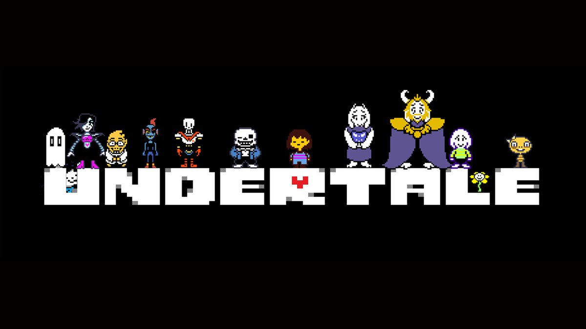
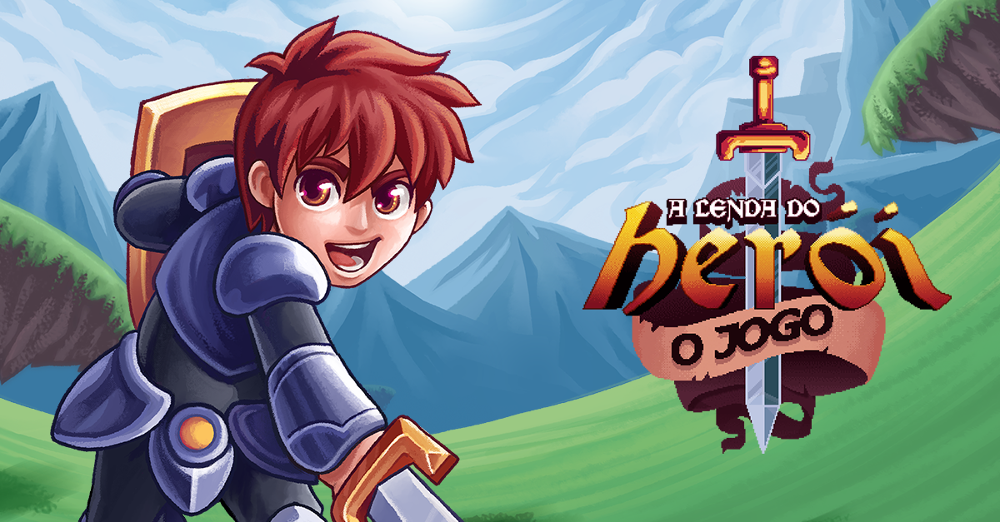

Projetos
Hades 2

Hades II é a sequência do aclamado jogo de ação roguelike Hades, desenvolvido pela Supergiant Games. A história segue Melinoë, a irmã de Zagreus, enquanto ela tenta libertar sua família e confrontar as divindades do submundo. O jogo mantém a jogabilidade rápida e intensa do original, introduzindo novas mecânicas, armas e personagens, além de uma narrativa rica e envolvente. Com visuais deslumbrantes e uma trilha sonora cativante, Hades II promete expandir ainda mais o universo mitológico que conquistou muitos fãs.
Undertale
Undertale é um jogo de RPG indie criado por Toby Fox, lançado em 2015. A história segue um humano que cai em um mundo subterrâneo habitado por monstros. O jogador deve navegar por esse mundo, fazendo escolhas que afetam a narrativa e os relacionamentos com os personagens. O jogo se destaca por seu estilo gráfico retro, humor peculiar e mecânicas de combate únicas, que permitem ao jogador escolher entre lutar ou dialogar com os inimigos. Com múltiplos finais e uma forte ênfase em escolhas morais, Undertale explora temas de empatia e amizade, conquistando uma base de fãs dedicada.
A lenda do Herói
A Lenda do Herói é um jogo de plataforma e aventura indie desenvolvido pela dupla brasileira Lunatic Wolf Studio. Lançado em 2016, o jogo apresenta uma narrativa cômica e leve, onde o jogador controla um herói que parte em uma missão para resgatar uma princesa e salvar o mundo. Com um estilo artístico pixelado, o jogo combina humor, músicas cativantes e mecânicas de jogo simples, oferecendo uma experiência divertida e nostálgica. A história é contada de forma interativa, com diálogos e situações engraçadas, tornando-o um tributo ao clássico gênero de jogos de aventura.